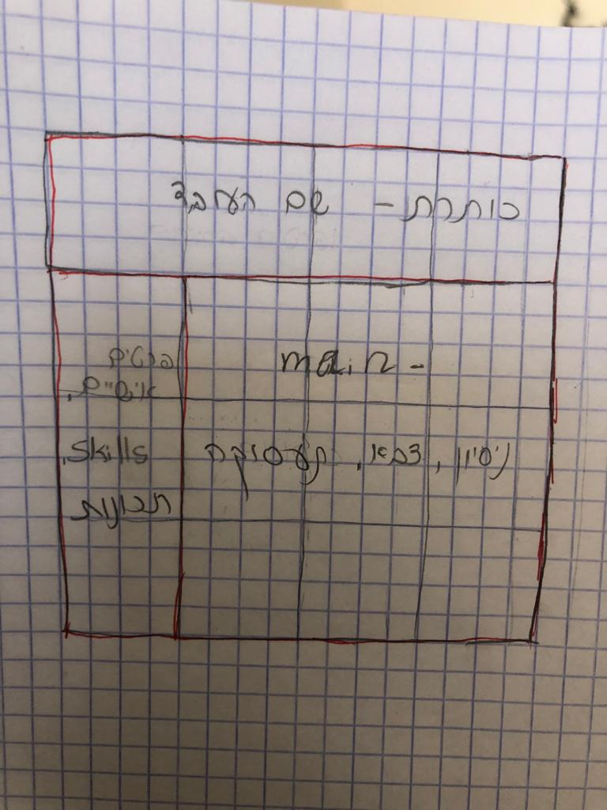

תכנון UX
- קהל היעד של האתר הוא אני- שכותבת את קורות החיים שלי
- המטרה הראשית של האתר היא מתן האפשרות לכתיבת קורות חיים מקצועיים
- מטרות משניות- התנסות בכתיבת קורות חיים המותאמים לסוגי משרות שונות
- המשתמש יכול לכתוב קורות חיים, לעצב אותו כרצונו
- מדד ההצלחה הוא בסופו של דבר קבלה לעבודה בזכות קורות החיים
- האתר מתייחס לעולם התוכן של חיפוש עבודה במקצועות רבים ומגוונים
תכנון UI
- 
- color scheme:
cultured
beau blue
baby blue eyes
wild blue yonder
manatee
- fonts: Calibri, Britannic Bold
- התמונות שיהיו באתר הן תמונות של צלמיות שדרכן ניתן לבחור את העיצובים הרצויים